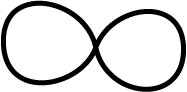
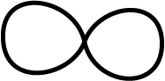

受講生のプログラミングを見て気がついたこと、 言わなくちゃならないと思ったこと、 もう一度言わなくちゃならないと思ったこと。
授業のメモ、開発すべきプログラムのスケッチをノートに書いているか？
ウェブに資料を準備すると、 どこかのバカ大学の学生は「いつでも見られる」と安心し、 ついでに（試験前にぱっと見れば間に合う）と誤解する。 そんなの間に合いません。
ろくに考えてないことをスマート装ってプレゼンするより、 目の前の課題について自分はどう解決するかをじっくり考える力、 隣の人に紙に書いてきちんと説明できる力が大切だ。 他人に説明できない「プログラム」など、 人間よりも融通が利かないコンピュータに理解できるはずがない。 何よりも自分が理解してないことの裏返し。
ネット上で ボタン を見つけたら反射的にクリック、で、理解が深まるわけねーだろ。
C プログラムは上から下へ、左から右へ、順番に実行される。
これに当てはまらないのを三つ、あるいはそれ以上述べよ。
上の四角に書き込むべき内容を思いつかない学生、 授業を受けているとは言わない。座っているだけ。反省しなさい。
変数は使う前に宣言する。次のプログラムは変数 x を整数の入れ物、 言い換えると整数を代入できる整数として宣言する。
int x;
変数 x の有効範囲はその宣言から後ろ、その宣言を含むもっとも内側の { } の内部。変数のスコープという。
int x;
と宣言しただけでは x の値は定まっていない。 初期化しない変数には予測できないゴミが入っている。
int x; x=0; | 宣言したあと、忘れずに初期化する。 |
int x=0; | 宣言と同時に初期化する。 |
x=0; int x; | 使ったあとに宣言しても手遅れ。エラー。 |
C言語では代入によって変数（コンピュータのある一部の情報）の値を書き換え、 その状態を人間がプログラムの結果として解釈する。
代入は、
x = y;
のようにプログラムし、左辺の変数に右辺の式を評価した値がコピーされる。
代入には方向性がある。= の代わりに ⇐ などを使い、 x ⇐ y; とプログラムできるように決めてあった方が良かったかもしれない。 残念でした。
x = 1; | 変数 x に整数 1 を代入する。 |
1 = x; | 整数 には代入できない。エラー。 |
x = y; | 変数 x に変数 y の値を代入する。 |
x = f(y); | 変数 x に関数 f(y) の値を代入する。 |
f(y) = x; | 関数 f(y) の値には代入できない。エラー。 |
x == y ; | 変数 x と変数 y の値が等しくなかったら 0、等しかったら式全体の値が 0 以外の値となる。代入文ではない。 |
x = y = z; | x = (y = z);と解釈される。 |
int x=1;
int y=2;
int z=3;
x=y=z;
printf("x=%i, y=%i, z=%i\n", x, y, z);
上から下へ、必要な #include、必要な #define、 利用する関数、 最後に関数 main()をプログラムする。この順番でなくてもよいが、 慣れるまでは守れ。
#include <stdio.h> #include <stdlib.h> | 最初に（上に）インクルード文。 インクルードの必要がなければ、 言い換えれば、 プログラム中で使う関数や定数をすべて自力でプログラムするなら、 #include する必要はない。 |
#define GOOD 0 | 必要ならば #define。 |
int add1(int n)
{
int result;
result =n+1;
return result;
}
| 引き数 n の値に応じて整数を返す関数 add1() の定義。 |
int sub(int n, int m)
{
return n-m;
}
| 引き数二つの整数の差を返す関数 sub()の定義。 |
int main(void)
{
int x;
int y;
int z;
x=1;
y=2;
z=add1(x);
x=sub(x,y);
return GOOD;
}
| ファイルの一番下、最後に main() が無難。 |
関数や変数には名前がつく。その名前で表す物が関数である場合、 名前の後ろに () をつけることが慣習的におこなわれている。
料理に例えることができる。
料理に必要な材料（変数の準備、宣言）を料理の前に整える。そのあとで 料理にとりかかる。
int main(void)
{
| 戻り値 関数名（引き数）の形で関数を定義する。 料理の名前に相当。 |
int x; int y; int z; | 変数宣言。料理の材料準備に相当。 |
x=1; y=2; z=add1(x); x=sub(x,y); return GOOD; | 料理の手順。材料をどう加工するか。 return で出来上がり。 |
} | 関数 main() はここまで。 |
ウェブで説明するのはめんどう。授業中に何例かやってみよう。
一文字目は英字。2文字目以降は英数字。アンダーバー(_)は英字と考える。
if, while, for, return, break, do, int, float, double, char, long, short, switch, default, goto は予約語。(もうちょっとあるかな？）
予約語は関数や変数の名前に使えない。
仕掛け花火
利用される関数はそれを利用する関数よりも前(上)に定義したほうが無難。
void sub(void)
{
// do something
}
int main(void)
{
sub();
return 0;
}
